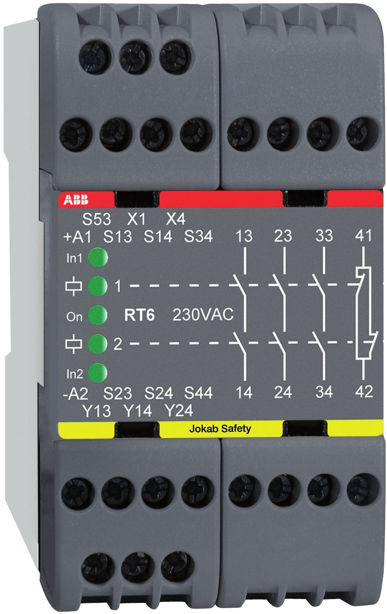
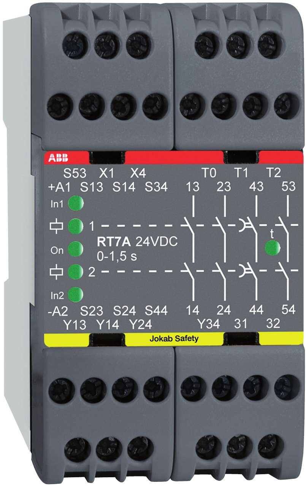

السيفتي PLC · الدرس 5 من 13
ريلايان من عائلة الـ RT9 نفسها بعرض 45 مللي: الـ RT6 بثلاثة مخارج أمان، والـ RT7 بمخرجين يتأخران ليفرمل المحرك بهدوء قبل قطع الكهرباء.

الـ RT6 ريلاي أمان «شامل» عرضه 45 مللي. يراقب الطوارئ والبوابات والستائر الضوئية والسجاد، وله خمس طرق توصيل للدخل مثل الـ RT9 تمامًا، لذلك يحل محل ريلايات كثيرة.
المنطق واحد: القناتان يجب أن تُغلقا، والريست يعمل عند ترك الزر، والكونتاكتورات تُراقَب بتلامسات NC. الفرق في الحجم والمخارج:
زمن الفصل في الاثنين أقل من 20 ms من الدخل إلى الخرج.

الـ RT7 هو RT6 نفسه في الدخل والريست، لكن له 4 مخارج أمان: اثنان يفصلان فورًا (13-14 و23-24)، واثنان يتأخران (43-44 و53-54)، وخرج NC للمعلومات 31-32.
لماذا التأخير؟ لو قطعت الكهرباء عن محرك يدور بسرعة عالية فسيستمر في الدوران حرًّا، وقد يتلف المنتج أو الماكينة. الأفضل أن يعطي الخرج المباشر أمر إيقاف للانفرتر أو السيرفو فيفرمل المحرك بهدوء، ثم بعد ثانية أو اثنتين يفصل الخرج المتأخر الكونتاكتورات. هذا اسمه Stop Category 1.
يُختار الزمن بربط الأطراف T0 وT1 وT2. والخرج Y34 يخبر الـ PLC بأن الخرجين المتأخرين مغلقان.
اضغط الطوارئ أو افتح بابًا وشاهد أين ينقطع التيار، ثم أعد كل شيء واضغط RESET.
شغّل المحرك، ثم افتح بابًا: لاحظ أن الانفرتر يأخذ أمر الإيقاف أولًا والمحرك يفرمل، ثم يفصل K1 بعد التأخير.
أجب إجابة صحيحة عن 5 من 6 على الأقل ليُسجَّل الدرس مكتملًا.
الأطراف والأرقام هنا من كتالوج ABB Jokab Safety (Safety Relays). قبل التطبيق على ماكينة حقيقية ارجع إلى الكتالوج وتقييم المخاطر الخاص بالماكينة. يُحفظ تقدّمك على هذا الجهاز فقط.
© LearnElectricals